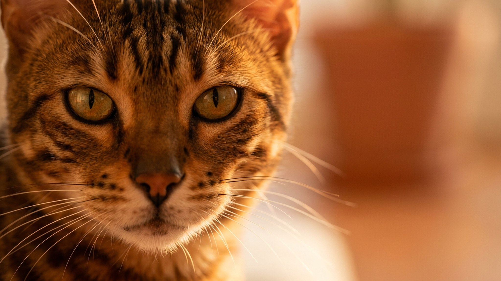

Хозяин ушёл на работу — бенгал за восемь часов успел смахнуть всё с полок, залезть в раковину и разнести рулон туалетной бумаги. Это не хулиганство: бенгальский кот просто скучал. Порода выведена от дикого азиатского леопарда, и этот факт определяет всё — характер, потребность в движении, отношение к воде. Ниже — как жить с бенгалом в квартире и не сойти с ума от его энергии.
🐾 Всё о вашем питомце — в одном приложении
AI-ветеринар, дневник, напоминания о прививках и уходе. Установите AnimaLife — это бесплатно, в Telegram и MAX.
Бенгал — одна из самых умных и активных пород. Его часто сравнивают с собакой: он идёт за хозяином по квартире, откликается на имя, осваивает апортировку и поводок. Бенгальский кот не умеет просто лежать — ему нужно участвовать в жизни семьи.
Бенгалу нужна высота. В дикой природе его предки охотились из засады сверху — квартирный бенгал ищет то же самое. Без вертикальной территории он займёт холодильник, кухонные шкафы и оконные карнизы.
Ключевое правило — предсказуемый игровой график. Две сессии в одно время ежедневно дают коту ощущение контроля над средой и снижают тревожную активность.
Бенгальский кот не боится воды — он её любит. Игры с краном, лапой в миске, попытки залезть в ванну рядом с хозяином — всё это норма для породы, а не причуда конкретного животного.
Скука для бенгала — не просто дискомфорт, а источник поведенческих проблем. Без выхода энергии кот начинает метить вертикальные поверхности, грызть провода, гиперактивно будить хозяина ночью или проявлять агрессию в игре — кусать и царапать без предупреждения.
Это не характер «плохого» животного. Это порода, которой не дали реализоваться. Перераспределить поведение проще в первые месяцы жизни бенгала в доме — потом переучивать труднее. Если деструктивное поведение уже закрепилось — обратитесь к зоопсихологу, а не пытайтесь наказывать: бенгал от наказания становится только изобретательнее.
Материал носит информационный характер и не заменяет очную консультацию ветеринара.
🐾 Спросите AI-ветеринара прямо сейчас
AnimaLife — приложение, где AI-ветеринар отвечает на вопросы о кошке или собаке 24/7. Бесплатно, без записи и очередей.
🐾 Понравился разбор?
Подпишитесь на канал — каждый день разбираем по одному тревожному симптому у кошек и собак: что в пределах нормы, а когда пора к врачу. Подпишитесь, чтобы не пропустить разбор, который может спасти здоровье вашего питомца.